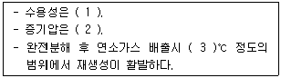
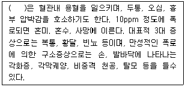
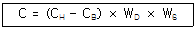
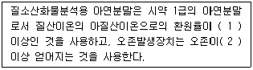
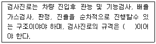
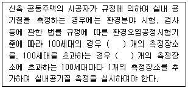

대기환경산업기사 (2009-08-30 기출문제)
1과목: 대기오염개론
1. 굴뚝으로부터 배출되는 연기의 확산모양에 대한 다음 설명 중 틀린 것은?
- 환상형(looping)은 난류가 심할 때 발생하고, 강한 난류에 의해 연기는 재빨리 분산되나 연기가 지면에 도달할 경우 굴뚝 가까운 곳의 지표농도가 높게될 수도 있다.
- 고기압지역에서 상층은 침강형 역전이 형성, 하층은 복사형 역전을 형성할 때 구속형(trapping)으로 나타난다.
- 부채형(fanning)은 대기가 매우 안정상태에서 발생하며 상하의 확산폭이 적어 굴뚝 부근 지표에 미치는 오염도가 적은 편이다
- 대기의 하층은 안정해졌으나 상층은 아직 불안정상태일 경우 훈증형(fumigation)이 나타나고 지표면에서의 오염도가 높다.
(정답률: 92%)

2. 다음 대기오염물질 중 2차 오염물질에 해당하는 것으로만 옳게 나열된 것은?
- O3, H2S, PM10
- NO, SO2, HCl
- PAN, 금속산화물, N2O3
- PAN, RCHO, O3
(정답률: 94%)
3. 다이옥신의 특징에 관한 사항중 ()안에 가장 적합한 것은?

- 1.높다 2.낮다 3. 1200 ~ 1300
- 1.높다 2.높다 3. 300 ~ 400
- 1.낮다 2.낮다 3. 300 ~ 400
- 1.낮다 2.높다 3. 1200 ~ 1300
(정답률: 100%)
4. 다음중 굴뚝의 통풍력 증가조건으로 가장 거리가 먼 것은?
- 굴뚝의 높이가 높을수록
- 외기주입량이 많을수록
- 굴뚝내의 굴곡이 없을수록
- 외기온도가 낮을수록
(정답률: 67%)
5. 휘발성유기화합물질(VOCs)은 다양한 배출원에서 배출되는데 우리나라의 경우 가장 큰 부분(총배출량)을 차지하는 배출원은?
- 유기용제 사용
- 자동차 등 도로이용 오염원
- 폐기물처리
- 에너지 수송 및 저장
(정답률: 89%)
6. 다음중 1,2차 대기오염 물질(발생원에서 직접 및 대기중에서 화학반응을 통해 생성되는 물질) 모두에 해당되지 않는 것은?
- NO2
- Aldehydes
- Ketones
- NOCl
(정답률: 73%)
7. 산성비와 관련된 토양성질에 관한 설명 중 가장 거리가 먼 것은?
- 토양의 성질 중 결정성의 점토광물은 약산적이고, 결정도가 낮은 점토광물은 강산적이다.
- 토양과 흡착되어 있는 양이온을 교환성 양이온이라 하고, 이중 양적으로 많은 것은 Ca2+, Mg2+, Na+, K+, Al3+, H+등 6종이다.
- Al3+와 H+이외의 양이온을 교환성 염기라 하며, 토양의 PH는 흡착되어 있는 교환성 양이온에 의해 결정된다.
- 토양입자는 일반적으로 (-)하전으로 대전되어 각종 양이온을 정전기적으로 흡착되고 있다.
(정답률: 55%)
8. 주변환경 조건이 동일하다고 할 때, 굴뚝의 유효고도가 1/3로 감소한다면 하류 중심선의 최대지표농도는 어떻게 변화하는가? (단, sutton의 확산식을 이용)
- 원래의 1/9
- 원래의 1/3
- 원래의 3배
- 원래의 9배
(정답률: 92%)
9. 광화학반응에 의해 생성되는 오존(O3)에 관한 일반적인 설명 중 옳은 것은?
- 오전 7~8시경에 하루 중 최고 농도를 나타낸다.
- 대기 중에 NO가 공존하면 O3은 NO2와 O2로 되돌아가므로 O3은 축적되지 않고 대기중 O3은 증가하지 않는다.
- 상대습도가 높고, 풍속이 큰지역(10m/s 이상)이 광화학방응에 의한 고농도 O3생성이 유리하다.
- 지표대기 중 O3의 배경농도는 0.1~0.2ppm 정도이다.
(정답률: 92%)
10. 다음 대기분산모델 중 미국에서 개발되었으며, 바람장모델로 계산, 기상 예측에 주로 사용된 것은?
- ADMS
- AUSPLUME
- MM5
- SMOGSTOP
(정답률: 82%)
11. 다음 특정물질 중 오존 파괴지수가 가장 큰 것은?
- CHCl2
- CF2BrCl
- CHFClF3
- CHF2Br
(정답률: 60%)
12. A공장 연돌에서 배출되는 가스량이 480m3/min (아황산가스 0.20%(v/v)를 포함)이다. 연간 25%(부피기준)가 같은 방향으로 유출되어 인근 지역의 식물생육에 피해를 주었다고 할 때, 향후 10년 동안 이 지역에 피해를 줄 아황산가스 총량은? (단, 표중상태 기준, 공장은 24시간 및 365일 연속가동 된다고 본다.)
- 약 2548톤
- 약 2883톤
- 약 3252톤
- 약 3604톤
(정답률: 57%)
13. 유효높이 60m인 굴뚝으로부터 SO2가 160g/s의 질량속도로 배출되고 있다. 굴뚝높이에서의 풍속은 6m/s, 풍하거리 500m에서 대기안정조건에 따른 편차 σy는 36m, σz는 18.5m이었다. 가우시안모델에서 지표반사를 고려할 때 , 이굴뚝으로부터 풍하거리 500m의 중심선상의 지표농도는?
- 약 34ug/m3
- 약 66ug/m3
- 약 85ug/m3
- 약 101ug/m3
(정답률: 60%)
14. 다음 중 균질층의 대기성분의 부피비율의 크기를 옳게 나타낸 것은? (단, 건조대기 기준)
- 아르곤＞이산화탄소＞네온＞헬률
- 아르곤＞이산화탄소＞헬률＞네온
- 아르곤＞이산화탄소＞메탄＞네온
- 아르곤＞이산화탄소＞오존＞메탄
(정답률: 87%)
15. 다음 중 지구 온나화를 일으키는 온실가스와 가장 거리가 먼 것은?
- CO2
- CO
- CH4
- N2O
(정답률: 73%)
16. 엘니뇨(El Nino) 현상에 관한 설명으로 거리가 먼 것은?
- 스페인어로 여자아이(the girl)라는 뜻으로, 엘니뇨가 발생하면 동남아시아, 호주 북부 등에서는 홍수가 주로 발생한다.
- 열대태평양 남미해안으로부터 중태평양에 이르는 넣은 범위에서 해수면의 온도가 평년보다 보통 0.5℃ 이상 높은 상태가 6개월 이상 지속되는 현상을 의미한다.
- 엘니뇨가 발생하는 이유는 태평양 적도 부근에서 동태평양의 따뜻한 바닷물을 서쪽으로 밀어내는 무역풍이 불지 않거나 불어도 약하게 불기 때문이다.
- 엘니뇨로 인한 피해가 주요 농산물 생산지역의 태평양 연안국에 집중되어 있어 농산물 생산이 크게 감축되고 있다.
(정답률: 95%)
17. 다음중 방사역전(radiation inversion)이 가장 잘 발생하는 계절과 시기는?
- 여름철 맑은 날 정오
- 여름철 흐린 날 오후
- 겨울철 맑은 날 이른 아침
- 겨울철 흐린 날 오후
(정답률: 100%)
18. 다음 중 불화수소의 지표식물과 가장 거리가 먼 것은?
- 옥수수
- 글라디올러스
- 메밀
- 목화
(정답률: 87%)
19. 다음은 대기오염물질이 인체에 미치는 영향에 관한 설명이다. ()안에 가장 적합한 것은?

- 납
- 수은
- 비소
- 망간
(정답률: 93%)
20. 지구상에 분포하는 오존에 관한 설명으로 옳지 않은 것은?
- 몬트리올 의정서는 오존층 파괴물질의 규제와 관련한 국제협약이다.
- 오존량은 돕슨(Dobson) 단위로 나타내는데, 1Dobosn은 지구 대기중 오존의 총량을 0℃ 1기압의 표준상태에서 두께로 환산하였을 때 0.001mm에 상당하는 양이다.
- 오존의 생성 및 분해반응에 의해 자연상태의 성층권 영역에는 일정 수준의 오존량이 평형을 이루게되고, 다른 대기권역에 비해 오존의 농도가 높은 오존층이 생긴다.
- 지구 전체의 평균오존전량은 약 300Dobson 이지만, 지리적 또는 계절적으로 그 평균값의 ±50%정도까지 변화하고 있다.
(정답률: 100%)
2과목: 대기오염 공정시험 기준(방법)
21. 대기오염공정시험방법상 시험에 사용하는 시약이 따로 규정이 없이 단순히 보기와 같이 표시되었을 때 다음중 그 규정한 농도(%)가 일반적으로 가장 높은 값을 나타내는 것은?
- 질산
- 염산
- 초산
- 불화수소산
(정답률: 77%)
22. 다음 중 특정 발생원에서 일정한 굴뚝을 거치지 않고 외부로 비산 배출되는 먼지의 농도계산 시 “전 시료채취 기간 중 주 풍향이 45°~90° 변할 때” 의 풍향 보정계수로 옳은 것은?
- 1.0
- 1.2
- 1.5
- 1.8
(정답률: 알수없음)
23. 지름이 1m인 굴뚝으로부터 130℃의 가스가 배출될 때, 피토우관으로 측정한 결과 동압이 0.8mmH2O 이었다면 배출가스이 평균유속은? (단, 굴뚝내의 습배출가스의 밀도는 1.3kg/Sm3, 피토우관 계수는 0.93이다.)
- 3.5m/sec
- 3.9m/sec
- 4.3m/sec
- 3.2m/sec
(정답률: 82%)
24. 다음은 하이볼륨에어샘플러(High Volume Air Sampler)법에 의한 측정지점의 포집먼지량과 풍향, 풍속의 측정결과로부터 비산먼지의 농도(c)를 구하는 식이다. 이식에 관한 설명으로 옳지 않은 것은?

- CH는 포집먼지량이 가장 많은 위치에서의 먼지농도(mg/m3)를 나타낸다.
- CB는 대조위치에서의 먼지농도(mg/m3)로서 대조위치를 선정할 수 없을 때는 보통 0.15mg/m3로 한다.
- WD는 풍향 측정결과로부터 구한 보정계수로 전 시료채취 기간 중 주풍향이 90° 이상 변할 때는 1.5로 한다.
- WS는 풍속 측정결과로부터 구한 보정계수로 풍속이 0.5m/s 미만 또는 10m/s 이상되는 시간이 전 채취시간의 50% 이상일 때 1.5로 한다.
(정답률: 72%)
25. 굴뚝배출가스 중 먼지의 자동연속적 측정방법에서 사용되는 용어의 의미로 틀린 것은?
- 교정용입자는 실내에서 강도 및 교정오차를 구할 때 사용하는 균일계 단분산 입자로서 기하평균 입경이 0.3~3um인 인공입자로 한다.
- 검출한계는 제로드리프트의 5배에 해당하는 지시치가 갖는 교정용입자의 먼지농도를 말한다.
- 균일계 단분산 입자는 입자의 크기가 모두 같은 것으로 간주할 수 있는 시험용입자로서 실험시에서 만들어진다.
- 응답시간은 표준교정판(필름)을 끼우고 측정을 시작했을 때 그 보정치의 95%에 해당하는 지시치를 나타낼때까지 걸린 시간을 말한다.
(정답률: 74%)
26. 철강공장의 아크로와 연결된 개방형 여과집진장치에서 배출되는 먼지농도 측정방법에 관한 설명으로 가장 거리가 먼 것은?
- 건옥백하우스의 경우 장입 및 출강사는 20±5L/min, 용해정련기는 10±3L/min로 배출가스를 흡인한다.
- 직인백하우스의 경우는 장입 및 출강사는 10±3L/min, 용해정련기는 20±5L/min로 배출가스를 흡인한다.
- 먼지측정은 규정에 따라 등속흡인 해야 하며, 시료 채취시 측정공은 반드시 헝겊 등으로 밀폐하여야 한다.
- 한 개의 원통형 여과지에 포집된 1회 먼지포집량은 2mg 이상 20mg이하로 함을 원칙으로 한다.
(정답률: 64%)
27. 굴뚝 배출가스 중 시안화수소를 질산은 적정법으로 분석하는 방법에 관한 설명으로 옳지 않은 것은?
- 시료 채취량 50L 인 경우 시료 중의 시안화수소의 정량범의는 5~100ppm이다.
- 염화물이 공존하는 경우에는 탄산납을 가하여 염화납으로서 침전시켜 거르고 황하물이 공존하는 경우에는 암모니아수(28%) 1mL를 가하고 그후 각각 pH를 조절한다.
- N/100 질산은 용액으로 적정하여 용액의 색이 황색에서 적색이 되는 점을 종말점으로 한다.
- 적정은 5mL의 갈색 마이크로 뷰렛을 사용하여 행한다.
(정답률: 85%)
28. 대기오염물질 배출허용기준 중 일산화탄소의 표준산소농도는 12%를 적용한다. A공장 굴뚝에서 측정한 실측산소농도가 14%일 때 일산화탄소 농도(C)는? (단, Ca : 일산화탄소의 실측농도(ppm)이다.)
- C(ppm) = Ca × 9/7
- C(ppm) = Ca × 7/9
- C(ppm) = Ca × 12/14
- C(ppm) = Ca × 14/12
(정답률: 75%)
29. 굴뚝 배출가스 중의 납을 자외선 가시선 분광법(흡광광도법)으로 분석할 때 사용되는 시약은?
- 디티존
- 다이에틸다이티오카바닌산은
- 다이메틸그리옥심
- 오르토페난트로닌
(정답률: 93%)
30. 다음은 굴뚝 배출가스 중의 질소산화물을 아연환원 나프틸에틸렌디아민법으로 분석 시 시약과 장치의 구비구건이다. ( )안에 알맞은 것은?

- 1. 65%, 2. 0.1V/V%
- 1. 90%, 2. 0.1V/V%
- 1. 65%, 2. 1V/V%
- 1. 90%, 2. 1V/V%
(정답률: 54%)
31. 굴뚝 배출 가스상 물질 시료채취 시 주의사항으로 가장 거리가 먼 것은?
- 수직굴뚝의 경우에는 바람에 따른 작업환경 등을 고려하여 채취구를 같은 높이에 3개 이상 설치하는 것이 좋다.
- 굴뚝내의 압력이 매우 큰 부압(-300mmH2O 정도 이하)인 경우에는, 시료 채취용 굴뚝을 부설하여 용량이 큰 펌프를 써서 시료가스를 흡입한다.
- 흡수병을 공용으로 할때에는 대상 성분이 달라질 때마다 묽은 산 또는 알칼리 용액과 물로 깨끗이 씻은 다음 다시 흡수액으로 3회 정도 씻은 후 사용한다.
- 습식 가스미터를 이동 또는 운반할 때에는 반드시 물을 빼고, 가스미터는 300mmH2O 이내에서 사용한다.
(정답률: 77%)
32. 굴뚝 배출가스 내의 먼지측정 방법 중 반자동식 채취기에 의한 시료채취 방법으로 가장 거리가 먼 것은?
- 피토관의 배출가스 흐름방향에 대한 편차는 30°이하 이어야 한다.
- 한 채취점에서의 채취시간을 최소 2분 이상으로 하고, 모든 채취점에서 채취시간을 동일하게 한다.
- 동압은 원칙적으로 0.1mmH2O의 단위까지 읽는다.
- 피토관을 측정공에서 굴뚝내의 측정점까지 삽입하여 전압공을 배출가스 흐름방향에 바로 직면시켜 압력계에 의하여 동압을 측정한다.
(정답률: 58%)
33. 굴뚝 배출가스 중 벤젠의 농도범위가 약 2 ~20V/V ppm에 가장 접합한 분석방법은? (단, 시료 채취량은 10L)
- 메틸에틸케톤법
- 이온크로마토그래프법
- 차아염소산염법
- 질산토룜 - 네오트린법
(정답률: 50%)
34. 다음중 환경대기 중의 먼지농도를 측정하는 주 시험방법은?
- 하이볼륨에어샘플러법(자동) 및 광산란법(수동)
- 로우볼륨에어샘플러법(수동) 및 광산란법(자동)
- 하이볼륨에어샘블러법(수동) 및 베타선법(자동)
- 로우볼륨에어샘블러법(자동) 및 베타선법(수동)
(정답률: 60%)
35. A농황산의 비중은 약 1.84이며, 농도는 약 95%이다. 이것을 몰 농도로 환산하면?
- 25.6mol/L
- 22.4mol/L
- 17.8mol/L
- 9.56mol/L
(정답률: 87%)
36. 굴뚝 배출가스 중의 황산화물 분석방법의 흐름도로 옳은 것은? (단, 침전적정법 기준이며, ASⅢ : 아르세나조Ⅲ 지시약, MR-MB : 메틸레드-메틸렌 블루우 혼합 지시약)
- 시료--(흡수)-->황산--(ASⅢ)-->수산화나트륨용액으로 적정
- 시료--(흡수)-->황산--(ASⅢ)-->초산바륨용액으로 적정
- 시료--(흡수)-->황산--(MR-MB)-->초산바륨용액으로 적정
- 시료--(흡수)-->황산--(MR-MB)-->수산화나트륨용액으로 적정
(정답률: 86%)
37. 굴뚝 배출가스 중의 크롬화합물을 자외선 가시선 분광법(흡광광도법)으로 분석하는 방법에 대한 설명으로 틀린 것은?
- 정량범위는 0.002 ~0.⑤mg이며, 정밀도는 3~10%이다.
- 시료 용액 중의 크롬을 과망간산칼륨에 의하여 6가로 산화시킨다.
- 과량의 과망간산염은 아황산나트륨으로 분해시킨다.
- 아이페닐카바지를 가하여 발색시키고, 파장 540nm 부근에서 흡광도를 측정한다.
(정답률: 50%)
38. 굴뚝 배출가스 중의 벤젠을 가스크로마토그래프법(고체 흡착 용매추출법)으로 분석할 때 시료를 채취한 흡착관에 있는 추출용매로 가장 적합한 것은?
- 황하수소
- 이황화탄소
- 클로로포롬
- 톨루엔
(정답률: 67%)
39. 원자흡광광도법에 관한 설명으로 옳지 않은 것은?
- 나트륨(Na), 칼륨(K), 칼슘(Ca)과 같이 비점이 낮은 원소에서는 광원램프로 열음극이나 방전램프를 사용할수 있다
- 불꽃중에서의 광로를 짧게 하고 흡수를 증대시키기 위하여 반사를 이용하여 불꽃 중에 빛을 여러번 투과시키는 것을 선프로파일이라고 한다.
- 아세틸렌- 아산화질소 불꽃은 불꽃의 온도가 높기 때문에 불꽃중에서 해리하기 어려운 내화성산화물을 만들기 쉬운 원소의 분석에 적당하다.
- 프로판- 공기 불꽃은 불꽃온도가 낮고 일부 원소에 대하여 높은 강도를 나타낸다.
(정답률: 62%)
40. 환경대기 중 가스상 물질은 시료채취 방법에 해당하지 않은 것은?
- 용매포집법
- 용기포집법
- 고체흡착법
- 고온흡수법
(정답률: 74%)
3과목: 대기오염방지기술
41. 유해가스 처리를 위한 가열소각법에 관한 설명으로 가장 거리가 먼 것은?
- After burner법이라고 하며, hydrocarbons, H2, NH3, HCN 등의 제거에 유용하다.
- 오염기체의 농도가 낮을 경우 보조연료가 필요하며, 보통 경제적으로 오염가스의 농도가 연소하한치(LEL)의 50%이상일 때 적합니다.
- 보통 연소실내의 온도는 1200~1500℃, 체류시간은 5~10초 정도로 설계하고 있다.
- 그을음은 연료 중의 C/H비가 3이상일 때 주로 발생되므로 수증기 주입으로 C/H비를 낮추며 해결가능하다.
(정답률: 79%)
42. 관성력 집진장치에 관한 설명중 옳지 않은 것은?
- 관성력에 의한 분리속도는 회전기류반경에 비례하고, 입경이 제곱에 반비례한다.
- 집진가능한 입자는 주로 10um이상의 조대입자이며, 일반적으로 집진율은 50~70%정도이다.
- 기류의 방향전환 각도가 작고, 방향전환 횟수가 많을수록 압력손실은 커지나 집진은 잘된다.
- 충돌식과 반전식이 있으며, 고온가스의 처리가 가능하다.
(정답률: 70%)
43. 냄새물질에 관한 다음 설명 중 옳지 않은 것은?
- 냄새는 화학적 구성보다는 구성 그룹배열에 의해 나타나는 물리적 차이에 의해 결정된다는 견해가 지배적이다.
- 냄새를 일으키는 물질은 적외선을 강하게 흡수한다.
- 냄새는 통상 분자내부진동에 의존한다고 가정되므로 라만변이와 냄새는 서로 관련이 있다.
- Moncrieff는 원소이든 화합물이든 간에 적린, 글리콜과 같이 복합체를 형성하면 냄새가 더 강해진다고 생각했다.
(정답률: 54%)
44. 악취처리에 관한 설명 중 옳은 것은?
- 아세톤의 공기 중에서의 최소감지농도는 0.1ppm정도이다.
- 흡수법으로 악취물질을 제거할 경우에는 흡수액으로는 HF를 많이 이용한다.
- 불꽃소각법에서의 연소온도는 600~800℃ 정도가 적당한다.
- 촉매소각법에서의 연소온도는 1000~1200℃가 적당하며, 보조연료를 사용하여 배출가스를 연소온도까지 가열한다.
(정답률: 42%)
45. 다음 먼지의 입경측정방법 중 간접 측정법과 가장 거리가 먼 것은?
- 관성충돌법
- 액상침강법
- 표준체측정법
- 공기투과법
(정답률: 93%)
46. 다음중 착화온도가 낮아지는 경우와 거리가 먼 것은?
- 발열량이 클수록
- 화학반응성이 작을수록
- 공기 중의 산소농도가 클수록
- 활성에너지가 작을수록
(정답률: 43%)
47. 여과집진장치에 관한 설명중 옳지 않은 것은?
- 1um이하의 미세먼지 포집을 위해서는 여과속도를 보통 7~15m/s 정도로 하는 것이 좋다.
- 간헐식 탈리방법은 대량가스의 처리에는 부적합하나 여포의 수명은 연속식에 비해 길다.
- 연속식 탈리방법은 reverse jet, pulse jet 형이 있으며, 압력손실이 거의 일정하다.
- 내면여과방식에는 package형 filter, 방사성 먼지용 air filter등이 해당된다.
(정답률: 55%)
48. 수소 12%, 수분 0.5%를 함유하는 중유의 고위발열량을 측정하였더니 1⑤00kcal/kg 이었다. 이 중유의 저위 발열량은?
- 약 9850 kcal/kg
- 약 9980 kcal/kg
- 약 10150 kcal/kg
- 약 10250 kcal/kg
(정답률: 73%)
49. 다음 중 프라우드수 (froude number)에 해당하는 것은?
- v2/√gL
- √gL/v2
- v/√gL
- √gL/v
(정답률: 65%)
50. 전기집진장치에서 집진면의 간격이 14cm, 공기의 유속이 2.4m/s 일 때 층류영역에서 입자를 100% 제거하기 위하여 요구되는 이론적인 집진극이 길이는? (단, 겉보기 이동속도 6cm/s이다.)
- 1.6m
- 2.8m
- 3.2m
- 5.6m
(정답률: 36%)
51. 다음 조성을 가진 석탄 1kg을 완전연소 시킬 때의 이론공기량(Sm3)은?
- 1.6 Sm3
- 3.5 Sm3
- 5.4 Sm3
- 7.5 Sm3
(정답률: 43%)
52. 메탄올 5kg을 완전연소 시키는데 필요한 실제공기량(Sm3)은? (단, 과잉공기계수 m=1.3)
- 22.5 Sm3
- 25.0 Sm3
- 32.5 Sm3
- 37.5 Sm3
(정답률: 75%)
53. 화합물별 주요 원인물질 및 냄새특징을 나타낸 것으로 가장 거리가 먼 것은?
- 황화합물 황화메틸 양파, 양배추 썩는 냄새
- 질소화합물 암모니아 분뇨냄새
- 지방산류 에틸아민 새콤한 냄새
- 탄화수소류 톨루엔 가솔린 냄새
(정답률: 73%)
54. A집진장치의 압력손실 25.75mmHg, 처리용량 42m3/sec, 송풍기 효율 80%이다. 이장치의 소요동력은?
- 13kw
- 75kw
- 180kw
- 240kw
(정답률: 67%)
55. 연소배출가스가 4000Sm3/h인 굴뚝에서 정압을 측정하였더니 20mmH2O였다. 여유율 20%인 송풍기를 사용할 경우 필요한 소요동력(kw)은? (단, 송풍기 정압효율은 80%, 전동기 효율은 70%이다.)
- 0.38kw
- 0.47kw
- 0.58kw
- 0.66kw
(정답률: 48%)
56. 관속 유체 흐름을 판별하는 레이놀즈 수를 바르게 나타낸 것은?
- 관성력/점성력
- 관성력/탄성력
- 점성력/탄성력
- 점성력/관성력
(정답률: 86%)
57. 화학적 흡착과 비교한 물리적 흡착의 특성에 관한 설명으로 옳지 않은 것은?
- 흡착제의 재생이나 오염가스의 회수에 용이하다.
- 온도가 낮을수록 흡착량이 많다.
- 표면에 단분자막을 형성하며, 발열량이 크다.
- 압력을 감소시키면 흡착물질이 흡착제로부터 분리되는 가역적 흡착이다.
(정답률: 75%)
58. 3% 황분이 들어있는 중유를 10ton/h로 연소하는 보일러의 배출가스를 탄산칼슘으로 탈황하여 석고(CaSO4, 2H2O)로 회수하려 한다. 탈황율을 90%라 할 때 이론적으로 회수할수 있는 석고의 양은? (단, 연료 중의 황성분은 모두 SO2로 된다.)
- 약 1.12 ton/h
- 약 1.25 ton/h
- 약 1.45 ton/h
- 약 1.61 ton/h
(정답률: 43%)
59. 다음중 등가비(equivalent ratio)의 정의를 올바르게 나타낸 식은?
- (산화제/실제의 연소가스량) / (산화제/완전연소를 위한 이론적인 공기량)
- (실제의 연소가스량/산화제) / (완전연소를 위한 이론적인 공기량/산화제)
- (실제의 연료량/산화제) / (완전연소를 위한 이상적 연료량/산화제)
- (완전연소를 위한 이상적 연료량/산화제) / (실제연료량/산화제)
(정답률: 55%)
60. 시멘트 공장에서 먼지 제거를 위해 전기집진장치를 사용하고 있다. 이집진장치를 폭은 4.4m, 높이 5.6m인판을 23cm 간격의 평형판으로 농도가 18.5g/m3인 가스 68m3/min를 처리한다면 집진효율(%)은? (단, 전기집진장치내 입자의 겉보기 이동속도는 0.⑤8m/s)
- 약 87%
- 약 92%
- 약 95%
- 약 99%
(정답률: 46%)
4과목: 대기환경 관계 법규
61. 대기 환경보전법령상 오염물질 발생량에 따른 종말사업장의 연결로 옳은 것은?
- 대기오염물질발생량의 합계가 연간 60톤인 사업장 -1종 사업장
- 대기오염물질발생량이 합계가 연간 25톤인 사업장 -3종 사업장
- 대기오염물질발생량이 합계가 연간 5톤인 사업장 -5종 사업장
- 대기오염물질발생량이 합계가 연간 45톤인 사업장 -2종 사업장
(정답률: 84%)
62. 다음은 대기환경보전법규상 정밀검사대행자 및 지엉사업자의 기술능력 및 시설. 장비중 검사진로의 규격기준이다. ( )안에 알맞은 것은?

- 너비 3m이상, 높이 3m이상
- 너비 5m이상, 높이 3m이상
- 너비 3m이상, 높이 4m이상
- 너비 5m이상, 높이 4m이상
(정답률: 50%)
63. 다중이용시설 등의 실내공기질 관리법규상 국공립 노인요양시설의 총부유세균(CFU/m3)의 실내공기질 유지기준은?
- 100이하
- 200이하
- 800이하
- 1000이하
(정답률: 59%)
64. 대기환경보전법규상 휘발유를 연료로 사용하는 이륜자동차의 배출가스 보증기간 적용기준으로 옳은 것은? (단, 2009년 1월 1일이후 제작자동차 기준)
- 10년 또는 192,000km
- 5년 또는 160,000km
- 2년 또는 10,000km
- 1년 또는 5,000km
(정답률: 54%)
65. 대기환경보전법규상 대기오염방지시설과 가장 거리가 먼 것은? (단, 기타 환경부장관이 인정하는 시설 등은 제외한다)
- 흡착에 의한 시설
- 음파집진시설
- 응축에 의한 시설
- 부상에 의한 시설
(정답률: 94%)
66. 환경정책기본법령상 대기 환경기준으로 옳지 않은 것은?
- 아황산가스의 24시간 평균치 : 0.⑤ppm 이하
- 이산화질소의 1시간평균치 : 0.12ppm 이하
- 오존의 8시간 평균치 : 0.06ppm이하
- 납의 연간평균치：0.5ug/m3이하
(정답률: 63%)
67. 환경정책기본법령상 이산화질소의 대기 환경기준은? (단, 24시간 평균치이며, 단위ppm)
- 0.⑤이하
- 0.06이하
- 0.1이하
- 0.15이하
(정답률: 54%)
68. 대기환경보전법령상 연료를 연소하여 황산화물을 배출하는 시설에서 연료의 황함유량이 0.5% 이하인 경우 기본부과금의 농도별 부과계수 기준으로 옳은 것은? (단, 황산화물의 배출량을 줄이기 위하여 방지시설을 설치한 경우와 생산공정상 황산화물의 배출물의 배출량이 줄어든다고 인정하는 경우는 제외한다.)
- 0.1
- 0.2
- 0.4
- 1.0
(정답률: 72%)
69. 대기환경보전법규상 자동차 사용정지표에 관한 내용으로 옳지 않은 것은?
- 사용정지기간 중 주차장소도 사용정지표지에 기재되는 항목이다.
- 사용정지표지는 자동차의 전면유리 우측상단에 붙인다.
- 사용정지표지는 사용정지기간이 지난 후에 담당공무원이 제거하거나 담당공무원의 확인을 받아 제거하여야 한다.
- 바탕색은 회색으로, 문자는 검정색으로 한다.
(정답률: 62%)
70. 대기환경보전법규상 대기오염물질 배출기준으로 틀린 것은? (단, 공통시설 기준)
- 용적이 5세제곱미터 이상이거나 동력이 3마력 이상인 도장시설
- 포장능력이 시간당 50킬로그램 이상인 고체입자상물질 포장시설
- 용적이 50세제곱미터 이상인 유.무기산 저장시설
- 동력이 20마력 이상인 분쇄시설(습식 및 이동식은 제외)
(정답률: 64%)
71. 대기환경보전법령상 자동차 제작자에게 매출액 산정 및 위반행위 정도에 따른 과징금 부과기준을 적용하고자 할 때, 자동차 배출가스가 배출가스보증기간에 제작차 배출혀용기준에 맞게 유지될 수 있다고 ① 인증을 받지 아니하고 제작. 판매한 경우 와 ② 인증내용과 다르게 제작. 판매한 경우의 가중부과계수로 옳은 것은?
- ① 1, ② 0.5
- ① 1.2, ② 1
- ① 2, ② 1
- ① 2, ② 1.5
(정답률: 65%)
72. 대기환경보전법규상 휘발성유기화합물 배출 억제. 방지시설 설치 등에 관한 기준 중 주유소 주유시설에 부착된 유증기 회수설비의 처리효율 기준은?
- 60% 이상
- 70% 이상
- 80% 이상
- 90% 이상
(정답률: 64%)
73. 다음은 다중이용시설 등의 실내공기질 관리법규상 신축 공동주택의 실내공기질 측정에 관한 사항이다.( )안에 공통으로 알맞은 것은?

- 2
- 3
- 5
- 10
(정답률: 73%)
74. 대기환경보전법상 용어의 뜻으로 틀린 것은?
- “휘발성유기화합물”이란 탄화수소류 중 석유화학제품, 유기용제, 그밖의 물질로서 환경부장관이 관계 중앙행정기관의 장과 협의하여 고시하는 것을 말한다.
- “온실가스”란 자외선 복사열을 흡수하거나 다시 방출하여 온실효과를 유발하는 대기중의 가스상태 물질로소 이산화탄소, 메탄, 이산화질소, 수소불화탄소, 과불화탄소, 육불화황을 말한다.
- “저공해엔진”이란 자동차에서 배출되는 대기오염물질을 줄이기 위해 엔진(엔진 개조에 사용하는 부품을 포함한다)으로서 환경부령으로 정하는 배출허용기준에 맞는 엔진을 말한다.
- “겜댕”이란 연소할 떄에 생기는 유리탄소가 응결하여 입자의 지름이 1미크론 이상이 되는 입자상물질을 말한다.
(정답률: 65%)
75. 대기환경보전법규상 위임업부 보고사항 중 “배출시설 및 방지시설의 정상운영여부 확인기기 부착업소와 행정처분현황”의 보고횟수 기준으로 옳은 것은?
- 연1회
- 연2회
- 연4회
- 수시
(정답률: 65%)
76. 대기환경보전법령상 과태료의 부과기준으로 틀린 것은?
- 일반기준으로서 위반행위의 횟수에 따른 부과기준은 해당 위반행위가 있는 날 이전 최근 1년간 같은 위반행위로 부과처분을 받은 경우에 적용한다.
- 일반기준으로서 부과권자는 위반행위의 동기와 그 결과등을 고려하여 과태료 부과금액의 최대 10% 범위에서 이를 감경한다.
- 개별기준으로서 제작차 배출허용기준에 맞지 않아 결함시정명령을 받은 자동차제작자가 결함시정 결과보고를 아니한 경우 1차위반시 과태료 부과금액은 100만원이다.
- 개발기준으로서 제작차배출허용기준에 맞지 않아 결합시정명령을 받은 자동차제작자가 결함시정 결과보고를 아니한 경우 3차위반시 과태료 부과금액은 200만원이다.
(정답률: 85%)
77. 대기환경보전법규상 장치에 따라 배출가스 관련부품을 분류할 때, 다음 중 연료공급장치(Fuel Metering System)와 가장 거리가 먼 것은?
- 전자제어장치
- 대기압센서
- 가스분석밸브
- 연료압력조절기
(정답률: 55%)
78. 대기환경보전법규상 2009년 1월1일부터 적용되는 자동차 연료 제조기준으로 틀린 것은? (단, 경유)
- 10%잔류 탄소량(%) : 0.15이하
- 밀도@15℃(kg/m3) : 815이상 835이하
- 다환 방향족(무게%) : 10이하
- 윤활성(um) : 400이하
(정답률: 20%)
79. 다중이용시설 등의 실내공기질 관리법규상 실내공간 오염물질에 해당하지 않는 것은?
- 이황산가스
- 일산화탄소
- 폼알데하이드
- 이산화탄소
(정답률: 59%)
80. 대기환경보전법령상 부과금 납부자가 천재지변으로 재산에 중대한 손실이 발생하여 부과금을 납부할수 없다고 인정될 때 1. 초과부과금의 징수유예의 기간과 2. 그기간 중의 분할납부의 횟수기준으로 옳은 것은? (단, 징수유예 신청은 2009년 6월 30일 이전에 한 것으로 본다.)
- 1. 유예한 날의 다음날부터 2년 이내 2. 6회 이내
- 1. 유예한 날의 다음날부터 2년 이내 2. 12회 이내
- 1. 유예한 날의 다음날부터 1년 이내 2. 6회 이내
- 1. 유예한 날의 다음날부터 1년 이내 2. 12회 이내
(정답률: 37%)